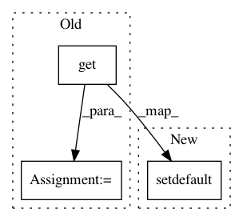

23475fbc1befccbeaf3717383a0f824ea83fef96,librosa/onset.py,,onset_detect,#,11
Before Change
// Default values for peak picking
// Taken from "MAXIMUM FILTER VIBRATO SUPPRESSION FOR ONSET DETECTION"
kwargs["pre_max"] = int( kwargs.get( "pre_max", .03*sr/hop_length ) )
kwargs["post_max"] = int( kwargs.get( "post_max", .03*sr/hop_length ) )
kwargs["pre_avg"] = int( kwargs.get( "pre_avg", .1*sr/hop_length ) )
kwargs["post_avg"] = int( kwargs.get( "post_avg", .07*sr/hop_length ) )
kwargs["delta"] = kwargs.get( "delta", 2 )
After Change
// Default values for peak picking
// Taken from "MAXIMUM FILTER VIBRATO SUPPRESSION FOR ONSET DETECTION"
kwargs.setdefault("pre_max", 0.03*sr/hop_length ) // 30ms
kwargs.setdefault("post_max", 0.03*sr/hop_length ) // 30ms
kwargs.setdefault("pre_avg", 0.10*sr/hop_length ) // 100ms
kwargs.setdefault("post_avg", 0.07*sr/hop_length ) // 70ms
In pattern: SUPERPATTERN
Frequency: 4
Non-data size: 3
Instances
Project Name: librosa/librosa
Commit Name: 23475fbc1befccbeaf3717383a0f824ea83fef96
Time: 2013-12-06
Author: brm2132@columbia.edu
File Name: librosa/onset.py
Class Name:
Method Name: onset_detect
Project Name: nilmtk/nilmtk
Commit Name: 8bc38a47c7b783a847a9594d247e84910ee05fa3
Time: 2014-12-15
Author: jack-list@xlk.org.uk
File Name: nilmtk/metergroup.py
Class Name: MeterGroup
Method Name: load
Project Name: nilmtk/nilmtk
Commit Name: 8a5013ce5cef105bed8341bc043c97cd803cd233
Time: 2014-12-18
Author: jack-list@xlk.org.uk
File Name: nilmtk/metergroup.py
Class Name: MeterGroup
Method Name: dataframe_of_meters
Project Name: jazzband/django-debug-toolbar
Commit Name: edd9d828bbeebc867710d5e078c1b0f8e80dc5b6
Time: 2013-11-24
Author: aymeric.augustin@m4x.org
File Name: debug_toolbar/panels/__init__.py
Class Name: Panel
Method Name: record_stats